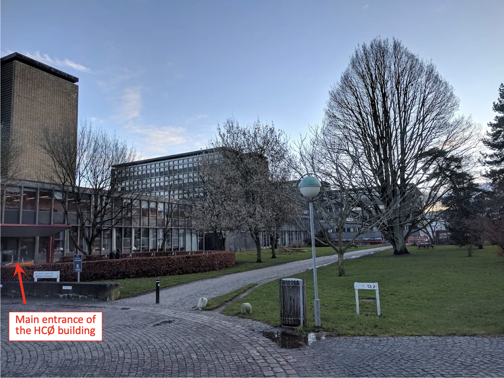
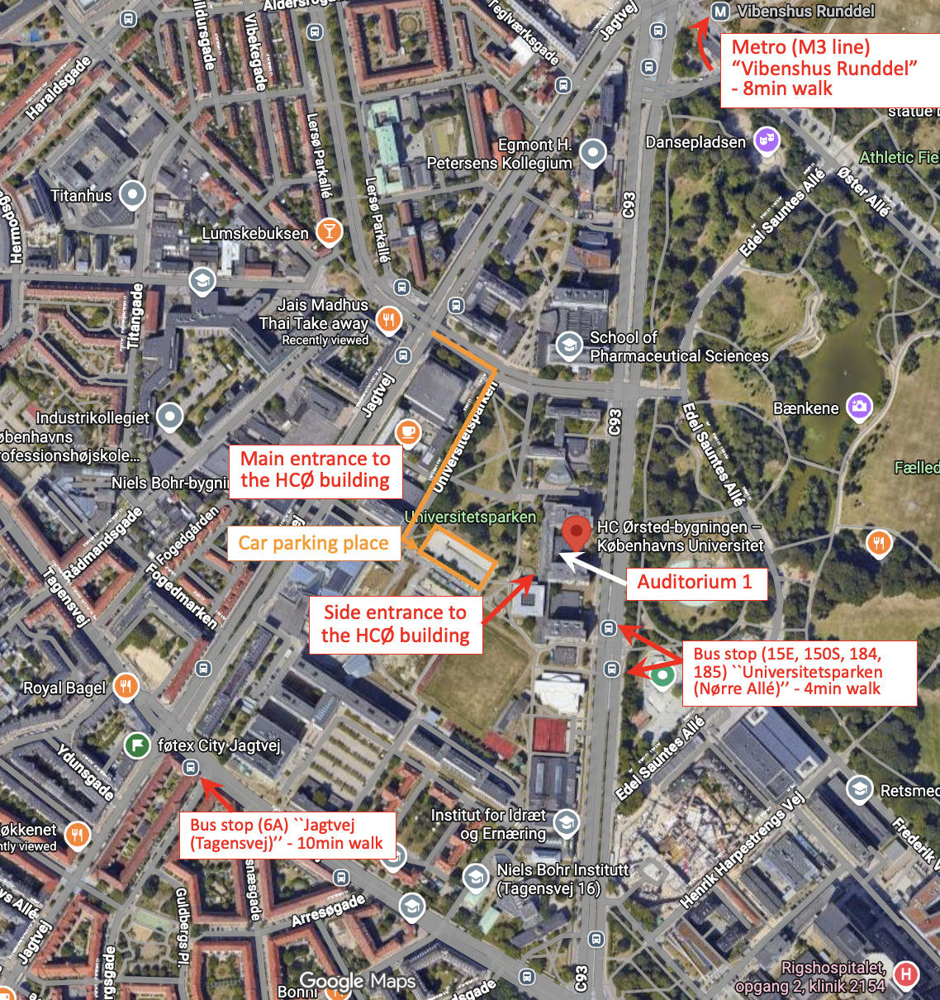

Venue
Auditorium 1, H. C. Ørsted Institute (HCØ Building)
Universitetsparken 5, 2100 Copenhagen Ø
North Campus, University of Copenhagen, Denmark


Getting to the workshop venue:
The nearest metro station is Vibenshus Runddel (M3 Cityringen), about a 8-minute walk.
The nearest bus stop is Universitetsparken (Nørre Allé), about a 4-minute walk
There are four main types of public transportation in Copenhagen: the metro, buses, S-trains, and regional trains. Tickets can be purchased from ticket machines at stations or through the Rejsebillet or Rejsekort apps.
In short, Rejsebillet lets you buy a ticket (single ticket, day pass, City Pass, etc.) before you travel, while Rejsekort works like a tap-in / tap-out travel card that automatically charges after each trip.
For first-time visitors, Rejsekort may be more convenient to use, since you only need to create an account in the app, link your bank card, swipe right when you get on public transport (e.g., a bus or the metro), and swipe left when you get off. The fare will then be automatically calculated and deducted based on the distance and route you have travelled.